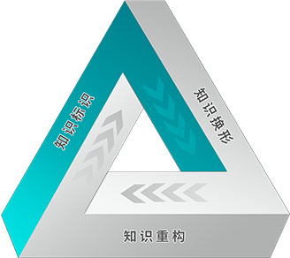

在严格遵循科学和循证医学的总原则下，以可信数据交换为基础，LEBEN构建了完全适应医学知识的自进化体系。医学知识和人一样，拥有出生、成长、成熟、衰退、死亡的全生命周期，并且全人类在漫长的发展中，不断适应着优胜劣汰的自然法则，最终完成了一次又一次进化。
随着新技术的涌现和越来越多参与者的加入，LEBEN平台对医学知识全生命周期的跟踪、监督、校验将更加精准高效，这将帮助减少循证医学中的不确定性。物理世界的传统医学知识进入LEBEN螺旋上升的自进化体系后，在大数据和人工智能的驱动下，将不断优胜劣汰，甚至会寻找到一条人类医学发展新路径。
未来，医学知识的进步将脱离个体主观意志，在LEBEN自进化体系中完成自主进化。
LEBEN知识体系分为知识标识、知识换形、知识重构三个子系统。这三个子系统互为支撑、循环利用。

知识标识：对物理世界医疗数据、医学知识、临床指南、技术、标准等进行LEBEN数据预处理过程，这些被成功标识的医学知识将成为LEBEN平台参与者的理论依据和行为标准。
知识换形：通过思维投影技术，将医生等从业者脑中无形的知识、经验转化成可度量、可计算、可追溯的有形LEBEN知识的镜像过程。这些有形知识可远程投放、可有偿共享、可被二次开发利用，也可以转化为新的医学标准。
知识重构：依托于阶梯隐形交换技术，各类医疗数据将打破存储边界，最大限度的交换和利用，新产生的数据驱动型知识将会改进或重构原有的知识结构，带动知识的不断进化。